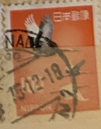
| SOURCE | TITLE| IMAGE MATCH | click to source page |
| eBay | Handstamped Birds Japanese Stamps for sale | eBay | 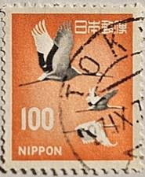 |
| eBay | Large Lot 8500+ Japan Stamps Strips Sheets 1970s Nippon Cancelled Unused | eBay | 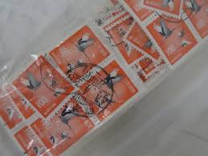 |
| Dreamstime.com | 288 Japan Red Stamp Stock Photos - Free & Royalty-Free Stock Photos from Dreamstime | 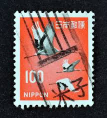 |
| Japan | 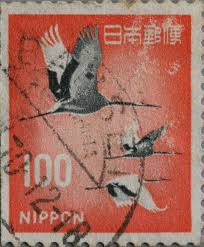 | |
| Shutterstock | Japanese Stamp No Circa Date Stamp Stock Photo 1333409165 | Shutterstock | 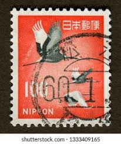 |
| 123RF | JAPAN - CIRCA 1971 A Post Stamp Printed In Japan Shows Mute Swan - Cygnus Olor, Circa 1971 Stock Photo, Picture and Royalty Free Image. Image 14147091. | 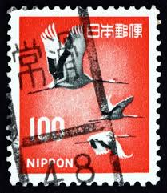 |
| Bird stamps: illustrations of birds on postage stamps | 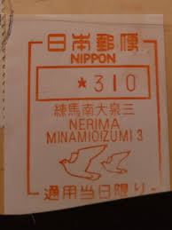 | |
| eBay UK | Japan Airlines Civil Collectable Airline Timetables for sale | eBay UK | 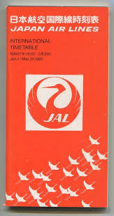 |
| Dreamstime.com | 1961 Japan 100 Yen "Manchurian Crane" Used Stamp Editorial Stock Photo - Image of stamp, design: 414167953 | 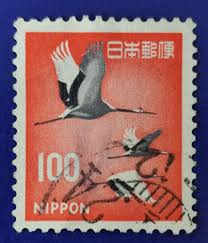 |
| Shutterstock | Ankara Türkiye 15 July 2021 Japan Stock Photo 2008368827 | Shutterstock | 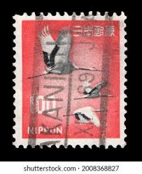 |
| HipStamp | Japan #888A 100y Japanese Crane | Asia - Japan, General Issue Stamp / HipStamp | 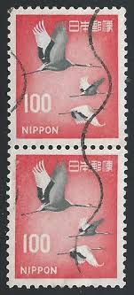 |
| Amazon.com | Amazon.com: Suguru Egawa: books, biography, latest update | 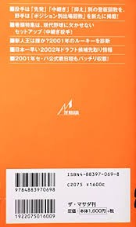 |
| Find Your Stamps Value | Value of 20 nippon stamp japanese stamps | 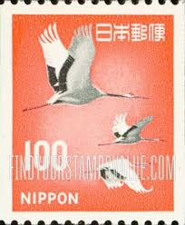 |
| iStock | Japanese Postage Stamp Stock Photo - Download Image Now - Above, Antique, Black Background - iStock | 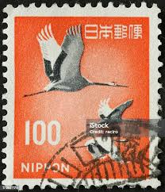 |
| Etsy | 1962 Japan Stamps - Etsy | 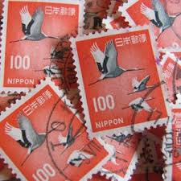 |
| HipStamp | Japan #888A 100y Birds - Japanese Crane | Asia - Japan, General Issue Stamp / HipStamp | 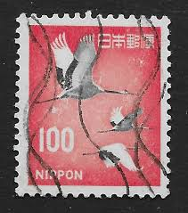 |
| HipStamp | Japan (1968) #888A (2) used | Asia - Japan, General Issue Stamp / HipStamp | 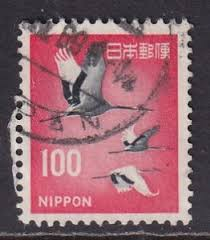 |
| Stampedia | JAPAN 1968 100 yen Definitive Stamps, | | 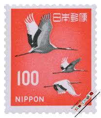 |
| eBay | Japan - 1968 - Definitive Issue - Japanese Crane, Grus japonensis - 100Y - #01 | eBay | 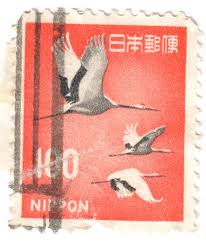 |
| Jungle.lk | 1979 Inauguration of "Airlanka" Airline - 1 September - 3.00 Rupees - Multicolored - Jungle.lk | 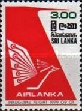 |
| Shutterstock | Japan Stamps: Over 10,004 Royalty-Free Licensable Stock Photos | Shutterstock | 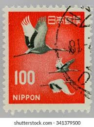 |
| Shutterstock | Pasuruan Indonesia August 29 2025 Stamp Stock Photo 2677604629 | Shutterstock | 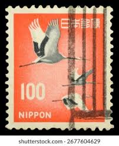 |
| Dreamstime.com | Postage stamp editorial stock photo. Illustration of postage - 136626948 | 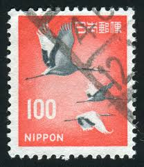 |
| PicClick | JAL INTERNATIONAL TIMETABLE 1997 Japan Air Lines $14.00 - PicClick | 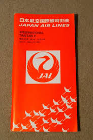 |
| HipStamp | Japan Scott# 888A used single | Asia - Japan, General Issue Stamp / HipStamp | 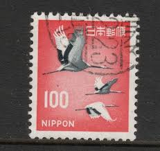 |
| Shutterstock | Japan Bird Print: Over 687 Royalty-Free Licensable Stock Photos | Shutterstock | 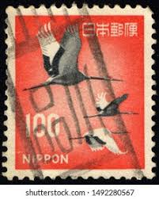 |
| HipStamp | Japan Scott# 888A used single | Asia - Japan, General Issue Stamp / HipStamp | 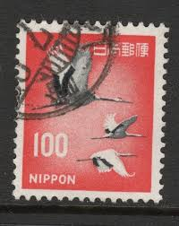 |
| Japanese Crane 1963 Vintage Postage Stamps // Now Available Via PillarBoxStudio on Etsy | 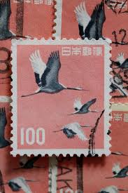 | |
| Stamp Community Forum | Traveling Birds-Clearly Postmarked - Stamp Community Forum | 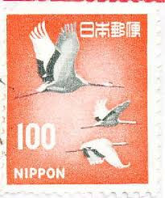 |
| Shutterstock | Japan Circa 1968 Stamp Printed Japan Stock Photo 82772800 | Shutterstock | 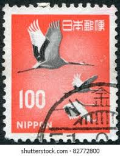 |
| eBay | Vintage Japan Lottery, Osaka city Reconstruction Lottery, Banknote[T972] | eBay | 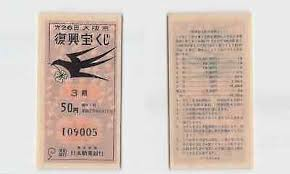 |
| HipStamp | Japan #888A Cranes Used | Asia - Japan, General Issue Stamp / HipStamp | 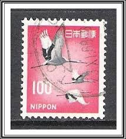 |
| Red-crowned Crane stamps - mainly images - gallery format | 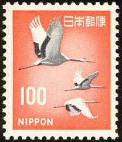 | |
| 123RF | RUSSIA KALININGRAD, 22 APRIL 2016: Stamp Printed By Japan Shows Japanese Hieroglyph, Circa 2012 正版图像123RF中国- 高质量免版税图像库. Image 61170700 | 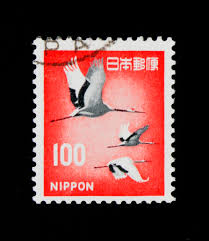 |
| Dreamstime.com | 4,003 Vintage Flora Fauna Stock Photos - Free & Royalty-Free Stock Photos from Dreamstime | 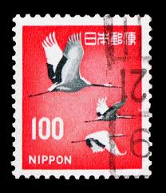 |
| Shutterstock | japan Stamp": Over 10,013 Royalty-Free Licensable Stock Photos | Shutterstock | 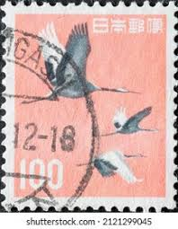 |
| BuyJapon | i-img488x648-176931641755620oywox41000.jpg?pri=l&w=300&h=300&up=0&nf_src=sy&nf_path=images/auc/pc/top/image/1.0.3/na_170x170.png&nf_st=200 | 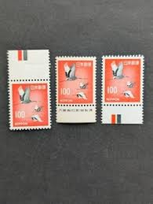 |
| HipStamp | Browse Products in Asia > Japan / HipStamp | 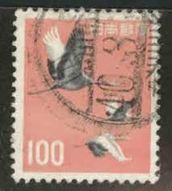 |
| eBay | Japan - 1968 - Definitive Issue - Japanese Crane, Grus japonensis - 100¥ - #2394 | eBay | 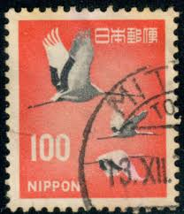 |
| NOSTALGIA..HAND WRITTEN TICKET | 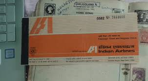 | |
| Shutterstock | Japan Stamp Vintage: Over 5,926 Royalty-Free Licensable Stock Photos | Shutterstock | 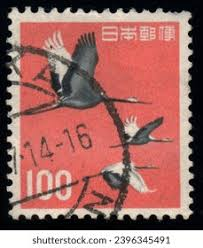 |
| eBay | Single Airline Playing Card "Japan Air Lines, JAL 100 B", Chan/Mertens #, Stand | eBay | 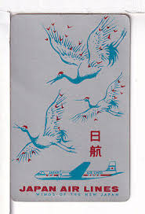 |
| PicClick CA | OLD EMPTY CIGARETTE packet K2 Everest #770 $15.99 - PicClick CA | 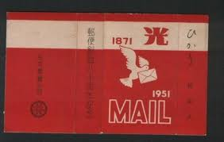 |
| eBay UK | Decimal Japanese Stamps for sale | eBay UK | 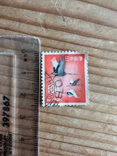 |
| HipStamp | Japan 1966/69 Scott 888A used - 100y, flying cranes, birds | Asia - Japan, General Issue Stamp / HipStamp | 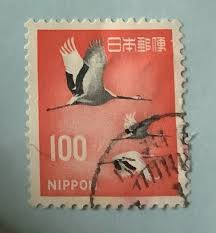 |
| Shutterstock | 3 Grus Grus Lilfordi Royalty-Free Images, Stock Photos & Pictures | Shutterstock | 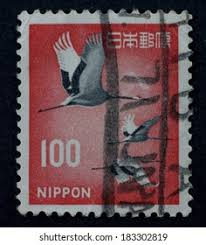 |
| Dreamstime.com | Postage Stamp with the Image of Red-crowned Crane. Grus Japonensis Editorial Stock Photo - Image of wing, bird: 392992323 | 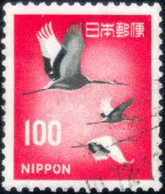 |
| eBay | Vintage Bandai Fuman HONDA VT250F Motorcycle model kit Unused | eBay | 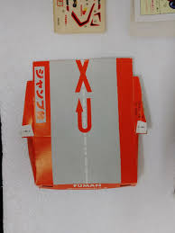 |
| eBay | Brooklyn Dodgers Tour 21/10/1956 Stub Ticket (Jackie Robinson One of Last Games) | eBay | 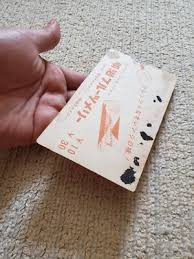 |
| 180 South African Airways - SAA ideas | south african airways, south african, south african airlines | ||
| eBay | Japan Stamp Scott #753 Japanese Crane (block sheet of 6) 1963 | eBay | |
| Indian Airlines Flight Timings From 1987 * April : Price ₹400 * May : Price ₹465 * June :Price ₹465 * September : Price ₹465 * November : Price ₹500 Shipping & Handling Extra | ||
| Airline Timetable Images | ANA - All Nippon Airways | |
| Josef Chladek | Shomei Tomatsu - Oh! Shinjuku (おお！新宿 | 東松 照明), Shaken, 1969, Tokyo, book/photobook – josefchladek.com | |
| iStock | Stork Postage Stamp Stock Photo - Download Image Now - Animal Body Part, Animal Migration, Animal Wildlife - iStock | |
| nagashima-kikaku.com | Colored Packing Envelopes BOX USA Clear View Poly Mailer Envelopes, 12\" X 15 1/2\", Clear/ White, Self Seal, Waterproof And Puncture Resistant, For Packing, Mailing, And Shipping Catalogs And Brochures, Pack Of | |
| AirTimes | Japan Air Lines | |
| Dreamstime.com | Grues Couronnées En Train De Se Reproduire En Tanzanie Image éditorial - Image du faune, touristes: 163332820 | |
| PicClick CA | SOUTH AFRICAN AIRWAYS SAA SAL Double Deck Playing Cards Sealed w/ Case Vintage $54.51 - PicClick CA | |
| 52 Best Canadian airlines ideas | canadian airlines, airlines, canadian |